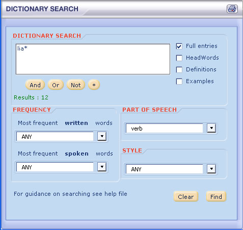
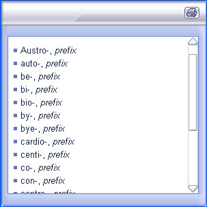
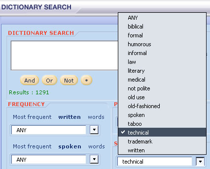

The dictionary search helps you to find your way through the dictionary to locate the entries that you are looking for. Select the dictionary search from the search menu. Also, you can search for particular words that appear in an entry.
You can choose options that will bring back only words that are very frequently used in spoken or written English, words that are a particular part of speech or words of a particular style.
Enter search terms into the box and ask the dictionary to find the matching entries.
As you type in the search box, the number of results found will appear. If the number is very large it might be better to refine the search by selecting from the various search options such as part of speech or by searching just among phrases rather than full entries.
A list of results appears. Click on any word to open that entry. The words you have searched for will be in red where they appear in the entry.
You can do wildcard searches using an asterisk "*" (any number of characters) only at the end of the word.
If you are not sure how to spell the word liaise for example, you can type "lia*" in the search box. This will give a list of all words beginning with the letters "lia".

Part of Speech search
You can search for words of a particular part of speech. Use the drop down menu in the dictionary search window to select the part of speech you want. When you click 'Find' the words matching your search will appear in a new window. The illustration below shows the search results for prefix. Click on any of the words in the results list to go to that dictionary entry.

Searching for words according to style
The dictionary groups words according to styles such as informal, medical, literary, or humorous. You can find all of the words of a particular style using the dictionary search window. Use the drop down menu to select the style you want. When you click 'Find' the words matching your search will appear in a new window. The illustration below shows the search results for verbs that have a technical style. Click on any of the words in the results list to go to that dictionary entry.

You can find information about parts of speech in the Grammar Guide section.